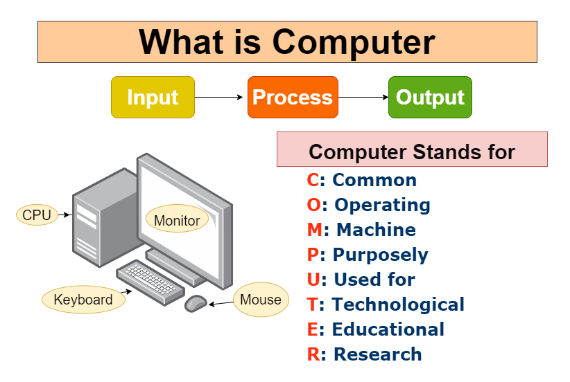

arrow_circle_up
Alapvető dolgok:
-
Mi a
számítógép (PC - personal computer)? Nézzünk néhány választ.
-
Első: Számítógép minden olyan
berendezés, amely képes
bemenő adatok (input)
fogadására, ezeken különféle,
előre beprogramozott műveletek (programok)
végrehajtására, továbbá az
eredményül kapott adatok kijelzésére, kivitelére
(output), amelyek vagy közvetlenül értelmezhetőek a felhasználók
részére, vagy más berendezések vezérlésére használhatóak.
-
Fontos kritérium az, hogy ugyanazon bemenő adatok alapján
mindig ugyanazon kimenő adatokat állítsa elő, azaz, hogy a
gép determinisztikusan működjön.

-
Második: A számítógép olyan gép
vagy eszköz, amely egy
szoftver- vagy hardverprogram utasításai
alapján folyamatokat, számításokat és műveleteket hajt
végre. Képes adatok (input) fogadására, feldolgozására, majd
kimenetek előállítására.

-
Harmadik: A számítógép olyan gép
, amely programozható
aritmetikai vagy logikai műveletsorok
automatikus végrehajtására (számítás) . A modern digitális
elektronikus számítógépek általános, programokként ismert
műveletsorokat hajthatnak végre .

-
Negyedik: A számítógép olyan
eszköz, amely információkat fogad el (digitalizált adatok
formájában), és valamilyen eredmény érdekében manipulálja
azokat egy program, szoftver vagy az adatok feldolgozására
vonatkozó utasítások sorozata alapján.

A számítógép két fő komponense:
-
Hardver (hardware): a számítógép
bármely olyan része, amelynek
fizikai szerkezete van, azaz
amely kézzel megfogható, például a billentyűzet vagy az
egér. Tartalmazza a számítógép összes belső alkatrészét is.

-
Szoftver (software): bármilyen
utasításkészlet , amely megmondja a hardvernek,
hogy mit és hogyan kell csinálni. Szoftverek például a webböngészők, játékok és
szövegszerkesztők.

-
Firmware:
-
Rögzített, többnyire kis méretű programok és/vagy
adatstruktúrák, melyek a különböző elektronikai
eszközök vezérlését végzik el.
-
A firmware kifejezést
eredetileg a hardverkomponens cseréje nélkül
megváltoztatható, magasabb szintű szoftverrel
szembeállítva definiálták. A
firmware feladata
jellemzően az olyan, igen alacsony szintű műveletek
elvégzése, melyek nélkül az eszköz teljesen
működésképtelen lenne.
-
Firmware-t tartalmazó
végfelhasználói eszközök például a távirányító, a
számológép, számítógép-alkatrészek mint a
merevlemez, billentyűzet, a monitor, a
memóriakártya.
-
Tudományos műszerek, ipari robotok is tartalmaznak
firmware-t, ahogy a
bonyolultabb fogyasztási cikkek is, mint a
mobiltelefonok, digitális fényképezőgépek,
szintetizátorok stb. alap- és komplikáltabb
funkcióit is a
firmware működteti.
-
További információk
Kérdések:
Kérdezz-felelek
Források:
computerinfobits
7esl